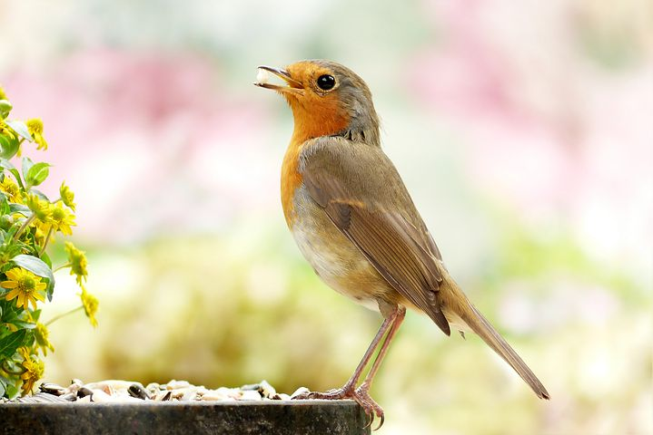

Chuyển đổi không gian màu
Chuyển đổi ảnh từ không gian màu ban đầu (RGB) sang không gian màu đen
trắng (Gray)

Canvas Input
Canvas Output
Xoay hình ảnh
Xoay hình ảnh ban đầu theo 1 góc 45 độ theo chiều kim đồng hồ
Canvas Input
Canvas Output
Ngưỡng ảnh
Lọc ảnh theo 1 ngưỡng nhất định
Canvas Input
Canvas Output
Làm mượt ảnh
Làm mượt ảnh bằng cách trộn những màu gần giống nhau ở lân cận nhau
Canvas Input
Canvas Output
Biến đổi hình thái ảnh
Biến đổi hình thái ảnh từ ảnh nhị phân (binary) bằng phương pháp xói mòn
Original Image
Canvas Input
Canvas Output
Image Gradients
Tính Laplacian của hình ảnh
Canvas Input
Canvas Output
Canny Edge Detection
Nhận diện biên bằng thuật toán Canny
Canvas Input
Canvas Output
Image Pyramids
Downsample ảnh sử dụng phương thức pyrDown()
Canvas Input
Canvas Output